INFORMATIONS
CLASSEMENTS
CLENDRIER
Rankings
BUTEURS
PASSEURS
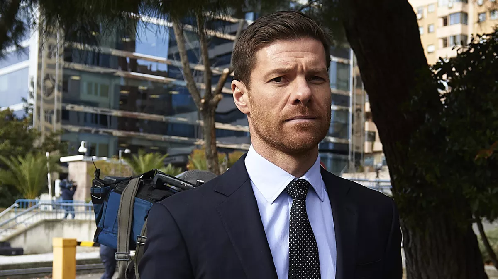
PEU D'EXPÉRIENCE MAIS ÉLÈVE DES PLUS GRANDS : POURQUOI XABI ALONSO INTÉRESSERAIT MÖNCHENGLADBACH
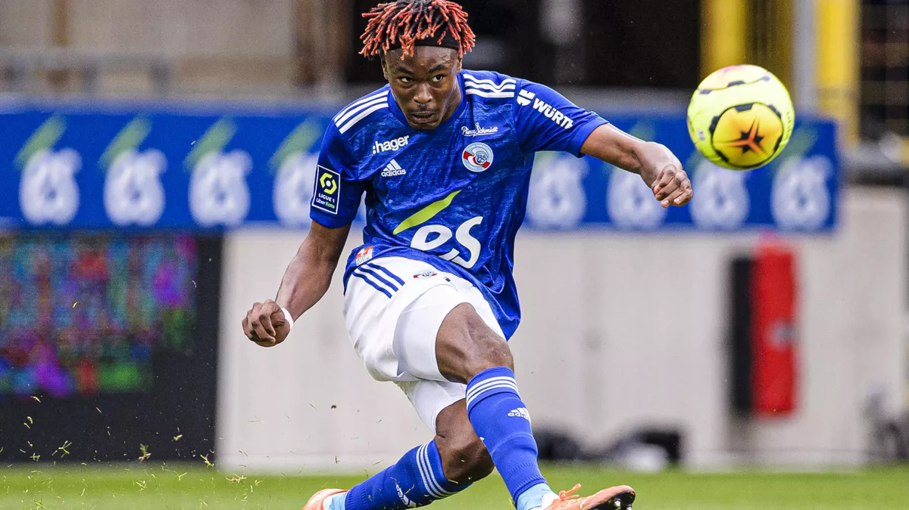MOHAMED SIMAKAN S'ENGAGE AVEC LEIPZIG JUSQU'EN 2026
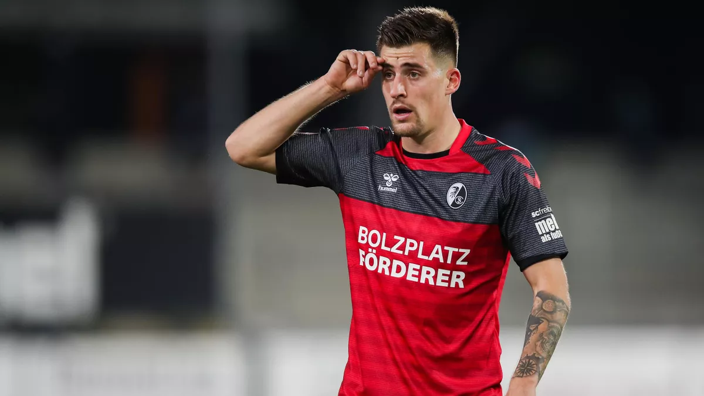BAPTISTE SANTAMARIA (FRIBOURG) : "LES BLEUS, JE LES AI DANS UN COIN DE LA TÊTE…"
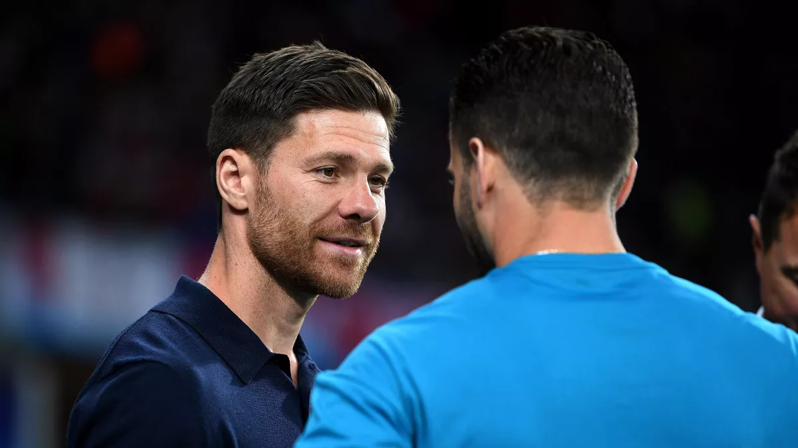XABI ALONSO EST DE RETOUR : IL VA ENTRAÎNER... MÖNCHENGLADBACH
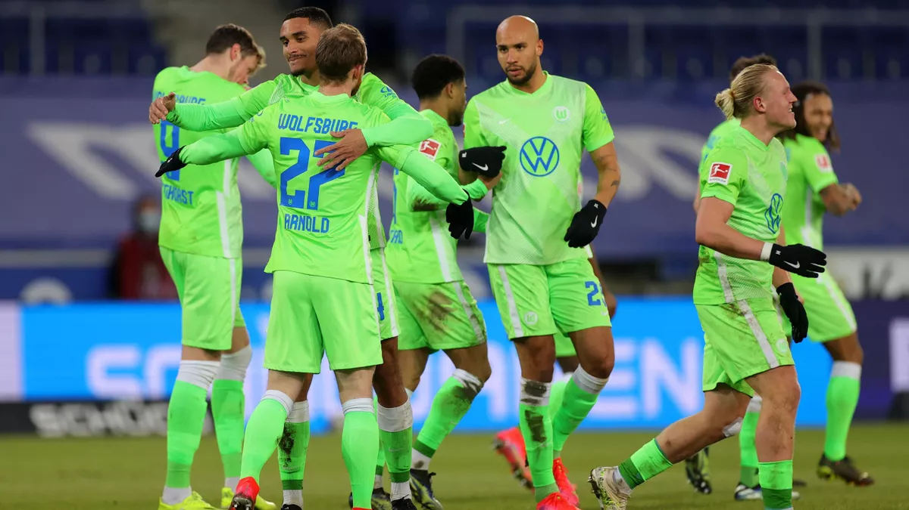BUNDESLIGA : WOLFSBURG DOMINE FACILEMENT BIELEFELD (3-0) ET GRIMPE SUR LE PODIUM
BUNDESLIGA : MAUVAISE OPÉRATION POUR DORTMUND MALGRÉ UN DOUBLÉ D'HAALAND, WOLFSBURG S'IMPOSE
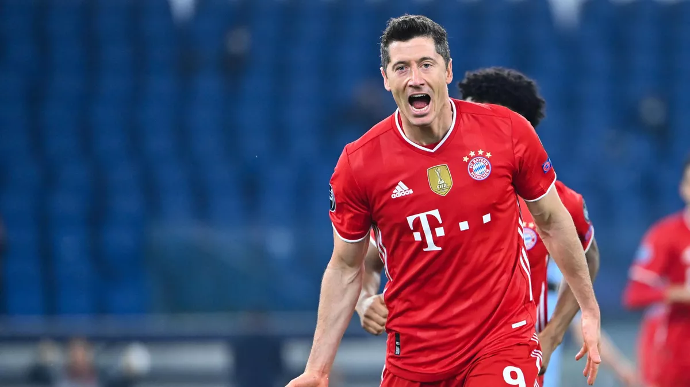LE BAYERN MUNICH NE LIBÈRE NI LEWANDOWSKI NI ALABA POUR LES MATCHES AU ROYAUME UNI
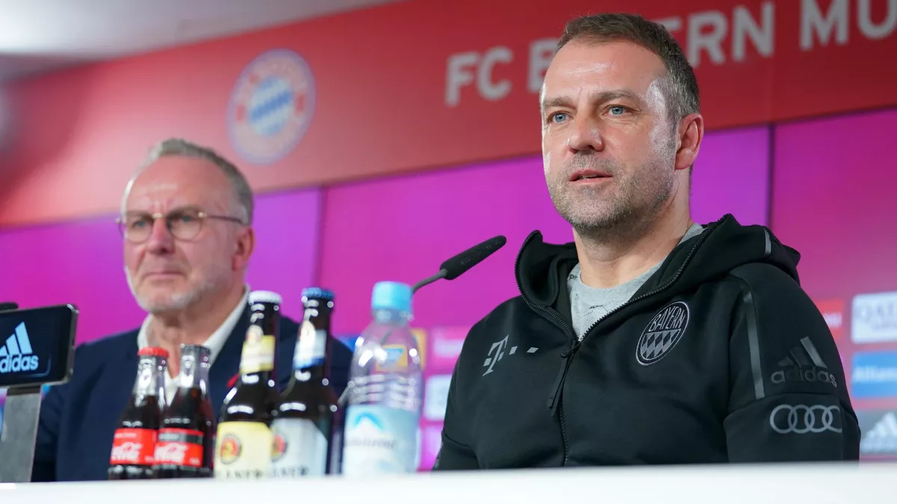KARL-HEINZ RUMMENIGGE NE VEUT PAS LÂCHER HANSI FLICK À LA MANNSCHAFT
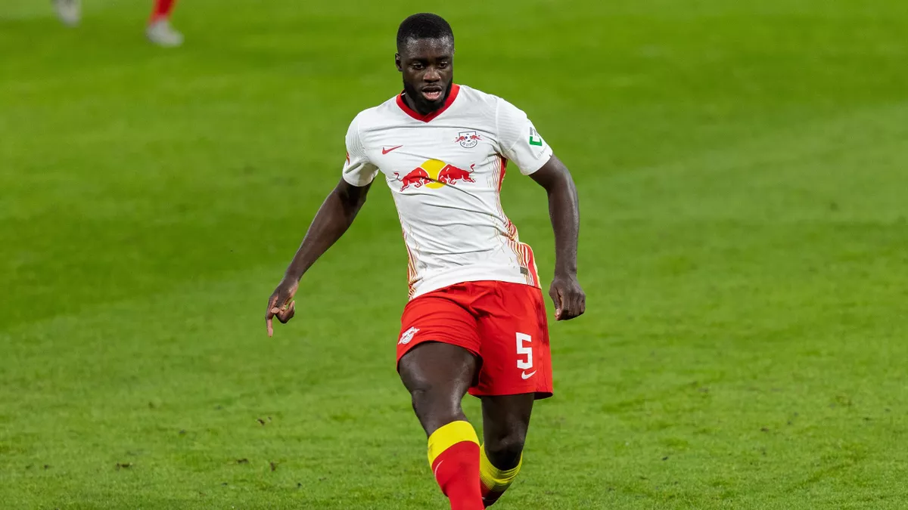DAYOT UPAMECANO BLESSÉ QUATRE JOURS AVANT LA LISTE DE DESCHAMPS
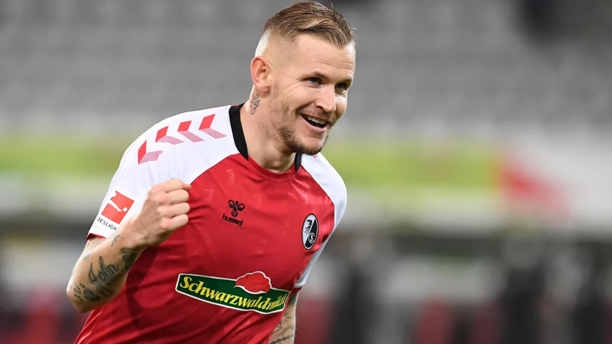274 MATCHES DE BUNDESLIGA, JONATHAN SCHMID VA FAIRE TOMBER LE RECORD DE FRANCK RIBÉRY CE WEEK-END
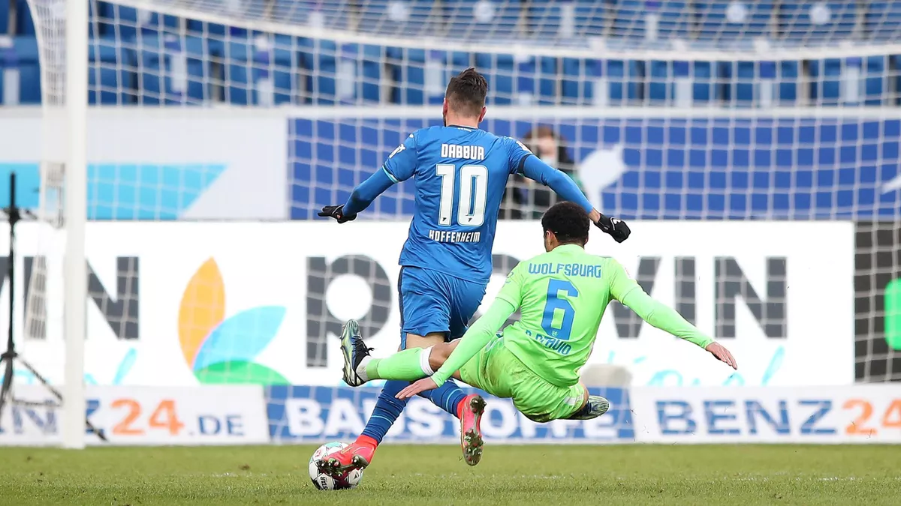VIDEO - L'INCROYABLE TACLE DE BOUCHER D'OTAVIO (WOLFSBURG) FACE À HOFFENHEIM
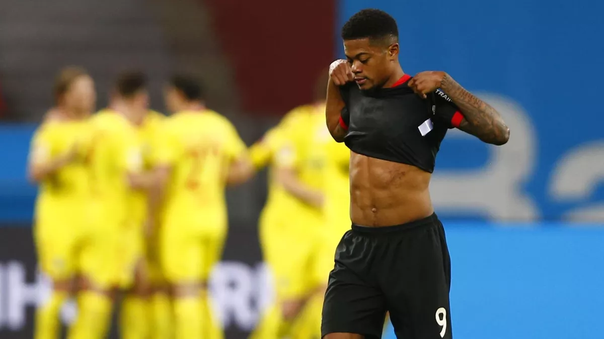BUNDESLIGA : APRÈS LA C3, LEVERKUSEN SOMBRE AUSSI EN CHAMPIONNAT FACE À FRIBOURG (1-2)
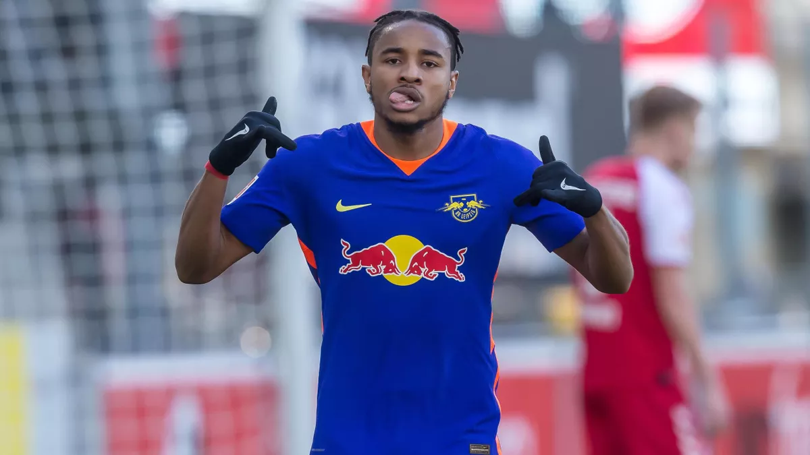BUNDESLIGA - PORTÉ PAR CHRISTOPHER NKUNKU, LEIPZIG TIENT LE RYTHME DU BAYERN

 BUNDESLIGA : MAUVAISE OPÉRATION POUR DORTMUND MALGRÉ UN DOUBLÉ D'HAALAND, WOLFSBURG S'IMPOSE
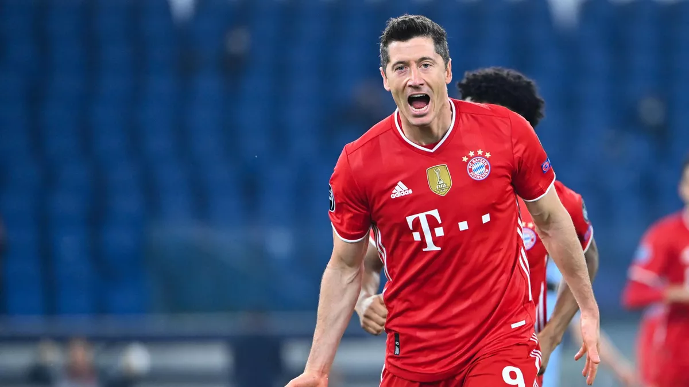LE BAYERN MUNICH NE LIBÈRE NI LEWANDOWSKI NI ALABA POUR LES MATCHES AU ROYAUME UNI
BUNDESLIGA : MAUVAISE OPÉRATION POUR DORTMUND MALGRÉ UN DOUBLÉ D'HAALAND, WOLFSBURG S'IMPOSE
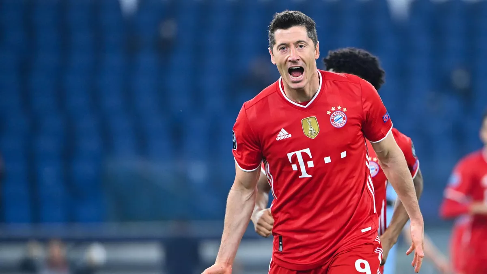LE BAYERN MUNICH NE LIBÈRE NI LEWANDOWSKI NI ALABA POUR LES MATCHES AU ROYAUME UNI